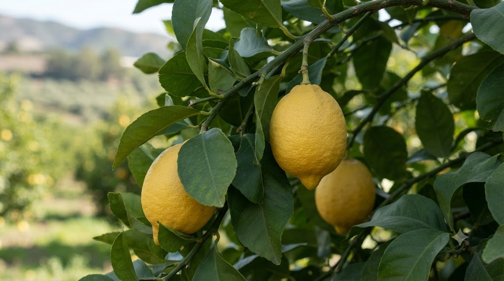

🌿 Jednodruhový olej
Citrus limonum
Svěží a čistící olej — posiluje imunitu, čistí tělo i mysl, zlepšuje náladu a zmírňuje obavy.

Rozmarýn · Levandule · Máta · Eukalyptus · Kadidlo
Citronový olej byl používán už v tradiční čínské a ajurvédské medicíně. Výzkumy 20. století potvrdily jeho silné antibakteriální a antivirové vlastnosti.
Jako registrovaný zákazník získáte slevu až 50 % na vybrané produkty.
Informace na tomto webu mají výlučně informační charakter a nejsou náhradou odborné lékařské péče. · Odkazy vedou na partnerský e-shop Bewit.